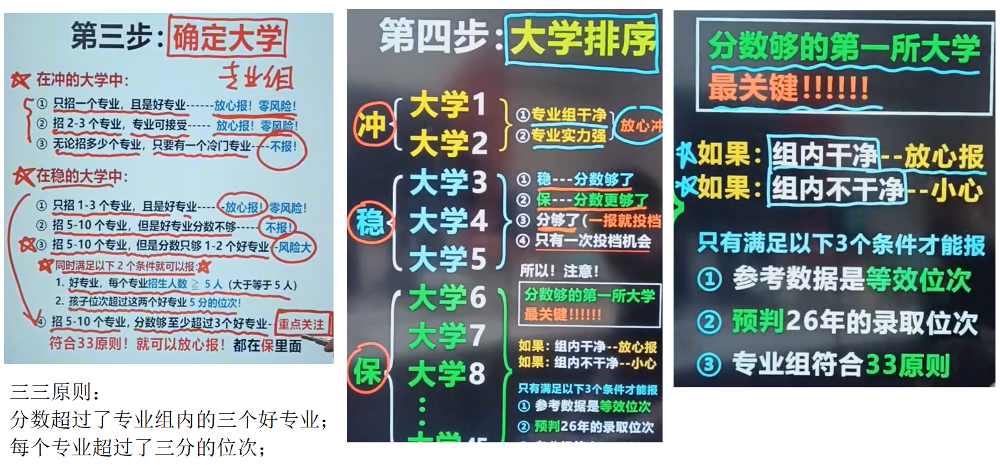
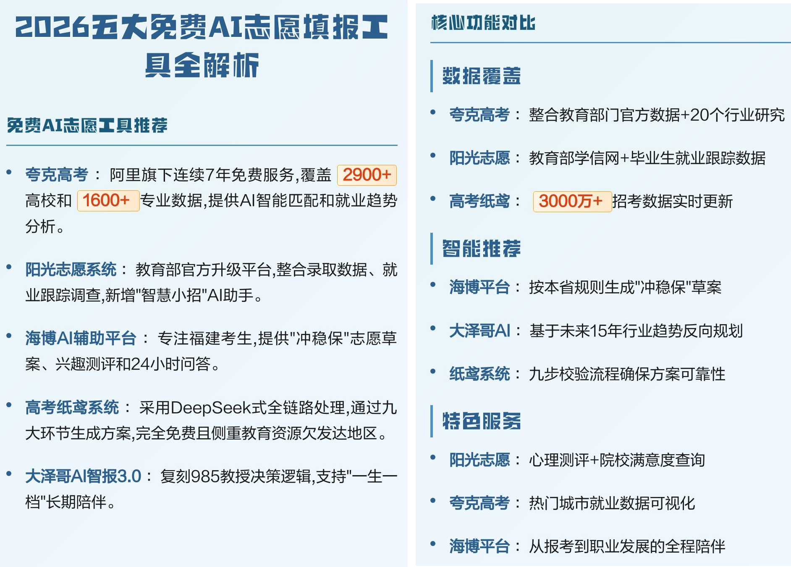
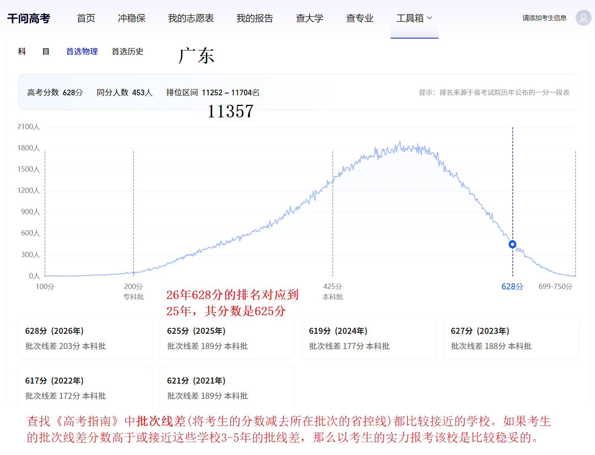
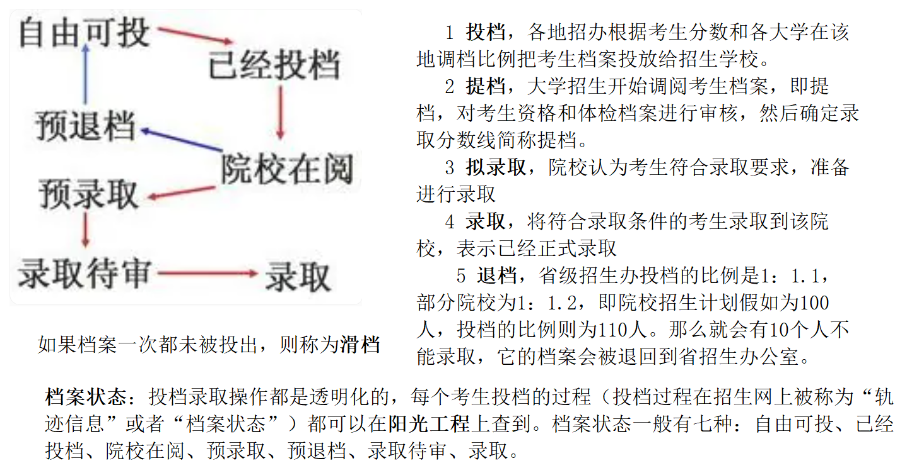
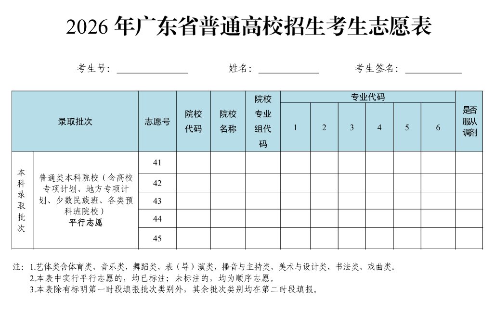

1 基本情况 2 理想专业与院校 3 高考填报原则 4 广东2026高考志愿填报流程了解 5 广东2026高考志愿填报规则了解 6 工具辅助 7 风险提示与应对策略 8 相关知识点 9 相关名词与术语 10 相关参考 11 相关言论 12 附件
广东物理类，物化生，628分，名次11357。
语文129，数学113，英语121,物理87，化学89，生物学89。
存在色弱情况(如中山大学生物技术不能填报)。
是“院校优先、专业优化、职业优先”？因人而异。如果有清晰的职业规划，可以考虑职业优先，如果分数足够，有特殊的院校偏好，可以是院校优先（如果某些职业或考公对985院校有要求，则也可以考虑院校优先）。此外，就应该是专业优先了，因为专业可以结合个人擅长及兴趣。
所谓鱼和熊掌不可兼得，如果是专业优先，则院校可能次一点，也就是“好专业、次院校”。如果是“好院校、次专业”，则可能录取到的是院校的冷门、非王牌专业，不太可取。院校最低的录取分数线就是最低消费，非王牌、非热门的专业组和专业。
理想职业或专业列举：
| 1 | 2 | 3 | 补充 | |
| 理想专业 | ||||
| 理想职业 | ||||
| 理想学校 | ||||
| 理想区域 |
3.1 分数优先、遵循志愿、一轮投档
3.2 不亏分、不退档、不滑档（档案一次都未被投出）
3.3 “冲、稳、保”志愿梯度，弱两头，强中间，30%、50%、20%
4.1 成绩定位，需参考往年分数线确定所属批次；
4.2 专业筛选，需结合个人兴趣与就业前景进行选择；
4.3 院校匹配，需根据分数划定可报考的院校范围；
4.4 梯度设置，需遵循冲稳保原则对志愿进行排序；
4.5 系统提交，需注意填报系统的截止时间。
广东 2026 年普通高考志愿填报按“网上填报、网上确认”走，核心时间从 6 月 28 日开始。你是广东物化生考生，后面主要看普通类物理批次流程。
时间节点：普通批次为主 6 月 29 日 19:00—7 月 4 日 16:00 除第一时段外的其他各批次、各科类院校专业组志愿
广东省教育考试院明确，2026 年普通高校招生实行网上填报志愿，填报网址为https://pg.eeagd.edu.cn/ks 。
第一步：先看政策和章程。
重点了解平行志愿、顺序志愿适用的批次，以及投档原则、志愿填报要求；同时查看目标高校招生章程，关注专业录取规则、身体条件限制、单科要求等。
第二步：查招生专业目录和分数段数据。
出分后结合自己的成绩、排位，查阅《广东省 2026 年普通高等学校招生专业目录》和志愿填报指南。你是首选物理，对应看“普通类物理版”。
第三步：对照体检要求。
阅读《招生专业目录》重要说明和高校招生章程，结合自身体检情况选择专业。身体条件受限的专业不要硬填，否则可能被退档。
第四步：先做草稿表。
上网填报前，可以预先填写《广东省 2026 年普通高校招生考生志愿表》，再逐项录入系统，减少填错概率。
第五步：网上填报并保存。
用证件号或手机号加密码登录系统，录入院校代码、院校专业组代码、专业代码、是否服从专业调剂并提交。若出现红色警告字符，要按提示核对代码，改到能正常保存为止。建议填报期间每隔一段时间点击保存校验10。
第六步：网上确认志愿。
广东不设现场签名确认，可用高考报名时绑定手机的短信验证码，或人脸核验完成确认；未网上确认的志愿无效7。
修改规则：未确认前，在规定时间内可以多次修改。首次确认后，如需更改，最多可进行 2 次取消志愿确认，修改后再重新确认；如果最终没有再次确认，志愿也会无效10。所以最后一定要看到“已确认”结果。
你要注意：广东是院校专业组模式，投档后要看专业组内专业和调剂选项。平行志愿的基本逻辑是“分数优先、遵循志愿、一轮投档”，档案投出后本批次后续志愿不再检索，因此梯度要拉开，不能只盯一个热门学校或热门专业组。
重点、反复看一下这个视频：报志愿全流程（28分钟精华版）

智能工具豆包总结出来的文字内容：
讲了高考志愿填报六步实操法，核心是“稳字当头”，全靠位次说话哦！
第一步查位次：部分省份查分直接看，多数要翻一分一段表，同分位次取大不取小（比如550分区间80320-81695，就用81695）。
第二步选大学：冲的院校最多高5分，稳的降0-30分，550分就看520-555分对应位次的学校，记得分数都要转成位次！
第三步看专业组：冲的学校只要有一个冷门专业就pass；稳的学校得看专业数量和优质专业占比，符合33原则才放心报。
第四步排序：按冲、稳、保顺序填，平行志愿只有一次投档机会，投档后不服从调剂会退档哦。
稳的院校的第一、第二个大学最关键，因为很大可能就会在稳的院校的第一个大学被投档。
第五步读招生简章：办学情况、加分政策、专业录取规则、单科/体检要求都得看，不懂直接打招生办电话问！
第六步填报：上本省招生考试院官网，核对院校专业代码，提交后再登录检查，截止前能反复修改～按步骤来，志愿填报不慌啦～
5.1 填报方式：
2026 年广东普通高校招生实行网上填报志愿，考生凭证件号或手机号加密码登录广东省教育考试院高考志愿填报系统，在规定时间内完成填报和网上确认；不设现场签名确认，用高考报名时绑定手机的短信验证码或人脸核验完成确认。投档录取以最后确认的志愿为准，账号、密码、验证码要保管好。
5.2 时间节点：
普通类物理考生主要关注第二时段，也就是 6 月 29 日 19:00 到 7 月 4 日 16:00。
5.3 志愿模式：
广东继续采用“院校专业组”模式。一所大学会拆成若干院校专业组，每个专业组有独立代码，同一专业组内各专业选考科目要求相同；你的选科必须满足专业组要求，不符合就不能填。
普通类本科、专科平行志愿栏均设 45 个院校专业组平行志愿；本科批次和普通类专科批次安排征集志愿，征集志愿均为 20 个院校专业组平行志愿。每个院校专业组内可填 6 个专业志愿，并设置是否服从专业调剂。
5.4 投档规则：
平行志愿的核心是：分数优先、遵循志愿、一次性投档。系统先按投档分从高到低排序，轮到你时，再按你填的志愿顺序依次检索，第一个符合投档条件且未满的专业组就会投出；一旦投档，同批次后面的志愿就不再检索。
如果投档后因为不服从调剂、身体条件不符、单科要求不符等原因被退档，平行志愿不会再补投到本批次其他志愿，只能等征集志愿或下一批次。所以专业组内专业和“是否服从调剂”要认真看，尤其要核对招生章程里的体检、单科、语种等要求。
5.5 修改确认：
未网上确认前，规定时间内可以多次修改本人志愿。首次确认后，如需更改，最多可取消 2 次志愿确认，修改后必须重新确认；如果没有再次确认，志愿无效。志愿截止后不再受理补报，已确认的志愿也不能随意放弃；考生档案投出后，一律不得申请放弃。
5.6 专项变化：
2026 年高校专项计划有调整：国家公费师范生的高校专项计划安排在提前录取批次本科非军检院校中填报；其他高校专项计划安排在本科录取批次普通类本科院校中填报，报考考生高考成绩总分不低于广东特殊类型招生录取控制分数线。未通过资格审核、公示不合格或复查不具备资格的考生，所填高校专项计划志愿无效。
5.7 关键提醒：
填志愿不要只看分数，更要看排位。广东官方也提醒，平行志愿批次要以排位综合研判，不能简单拿今年分数直接对比往年分数；建议按“冲、稳、保”思路安排，同一批次尽量填满，志愿之间拉开合理梯度。
“一轮投档”原则：考生按分数排序后，系统依次检索其填报的志愿院校，一旦符合条件的院校被检索到即完成投档，后续志愿自动失效。若考生未投出档案(若所有志愿均不满足条件)被或退档，则无法参与同批次其他志愿投档，或投档后被退档，只能通过征集志愿或下一批次录取。该机制旨在降低志愿填报风险，提升录取公平性。

6.1 千问：https://www.qianwen.com/
6.2 高考千问：https://p.qianwen.com/gaokaopc-tools/yfyd?_no_tbrt
提问范例（基本情况+兴趣爱好+职业取向+毕业后是继续深造还是直接就业）：
我是江苏物理论高考生(理化生)，分数628，希望大学离家近、毕业后能直接就业，但又对AI很感兴趣，想从事相关工作。请帮我生成志愿报告

6.3 阳光高考阳光志愿：https://gaokao.chsi.com.cn/zyck/
需要考生本人按流程使用：
注册帐号并登录→输入成绩信息→选择筛选偏好→智能筛选结果→生成志愿报告
6.4 高考纸鸢：应用商店搜索高考纸鸢；
6.5 优志愿：https://www.youzy.cn/
专业冷热分化风险：同校不同专业组投档位次差距可达数千名，热门专业（如计算机、临床）可能远超校线。应对：填报时务必勾选“服从专业调剂”，并在专业志愿中拉开梯度，避免扎堆。
位次波动风险：每年试卷难度变化会导致分数线上下浮动，但位次相对稳定。应对：以2026年实际位次为准，对照近三年目标院校专业组的最低录取位次进行最终校准。
核对规则（防止滑档/退档）
- 服从调剂：一定要勾！（除非你只想上某个专业）
- 单科要求：看目标专业是否要求英语/数学分数
- 体检限制：色盲不能报医学、化工；身高不够不能报警校/军校
地域与就业权衡：部分省外985虽平台高，但在本地就业资源上可能弱于省内头部高校。应对：若计划留在大湾区发展，可适当提高华南理工、中大等省内院校的志愿优先级。
查就业质量报告：去目标院校官网找毕业生就业报告，重点看分专业的协议就业率、升学率和自主创业率。
也可借助搜索引擎定位：直接在搜索引擎输入“XX高校 毕业生就业质量报告”，就能快速定位到该校官方发布的对应报告页面。
搜真实评价：在小红书、知乎、B站看在校生分享，了解专业学习状态和就业口碑。
8.1 高考录取过程

I 投档，各地招办根据考生分数和各大学在该地调档比例把考生档案投放给招生学校。如果档案一次都未被投出，则称为滑档，被迫进入下一批次录取或征集志愿。
II 提档，大学招生开始调阅考生档案，即提档，对考生资格和体检档案进行审核，然后确定录取分数线简称提档。
III 拟录取，院校认为考生符合录取要求，准备进行录取
IV 录取，将符合录取条件的考生录取到该院校，表示已经正式录取
V 退档，省级招生办投档的比例是1：1.1，部分院校为1：1.2，即院校招生计划假如为100人，投档的比例则为110人。那么就会有10个人不能录取，它的档案会被退回到省招生办公室。
档案状态：投档录取操作都是透明化的，每个考生投档的过程（投档过程在招生网上被称为“轨迹信息”或者“档案状态”）都可以在阳光工程上查到。档案状态一般有七种：自由可投、已经投档、院校在阅、预录取、预退档、录取待审、录取。
8.2 服从调剂
服从调剂，简单说就是：你被某个院校专业组提档后，如果填的几个专业都没录上，但同组里还有没满的专业，学校可以把你安排到这些专业里，而不是直接退档。
在广东新高考的院校专业组模式下，服从调剂不是全校随便调，而是在同一个院校专业组内调剂；不会跨到其他专业组，也不会调到未在本批次、本代码下投放计划的专业。
它生效的前提也很明确：你的分数达到了这个院校专业组的投档线，但你填报的专业没有达到录取条件；这时如果勾选了服从调剂，且同组还有符合你选科、体检等条件的未满专业，学校就可能给你分配。
广东平行志愿是一次性投档。广东省教育考试院提醒，考生一旦被投到某个院校专业组，本批次后面的其他志愿就不再检索；如果进档后因不服从调剂被退档，只能参加征集志愿或下一批次录取。所以服从调剂本质上是在“保专业”和“保录取”之间做选择：勾选调剂，主要降低退档风险；不勾选调剂，主要是守住自己不想读的专业底线。
你填志愿时重点看一件事：这个专业组里的所有专业，哪些是你愿意读的，哪些是你完全不能接受的。能接受，就服从；不能接受，就不要把这个专业组放进志愿表。
9.1 退档：是指招办投给院校的档案被院校退回。一般高分考生被退档，有三种情况：一是考生的分数虽然高于学校的录取分数线，但未达到所报专业的录取专业分数线且又不服从调剂；二是虽然总分较高但相关科目较差；三是身体条件不符合所报专业的要求。如果考生被不合理地退档，应及时与有关高校联系。
9.2 批次线差：查找《高考指南》中批线差(将考生的分数减去所在批次的省控线)都比较接近的学校。如果考生的批线差分数高于或接近这些学校3-5年的批线差，那么以考生的实力报考该校是比较稳妥的。二是拟报学校初步选定后，考生还要对照《招生考试报》中院校和专业计划，对院校和专业2009年是否招生、招多少进行确认。三是如果考生拟填报的院校是省外的，还要对照《招生章程》中该院校是否认可少数民族地区照顾政策以及院校对考生的单科成绩、身体条件有什么特殊要求等。只有这样反复测算分析，才能最大限度降低填报志愿的风险。
华南理工 中山大学 深圳大学 中南大学 湖南大学 西安电子科大
11.1 不要听别人说什么就是什么，别人说的话不要盲从，包括我在内。18岁是成年人了，要有一定的信息分析和判断能力，自己去做选择并负责。可征求其他人意见，让父母亲做自己的后盾。而做父母亲的一定要放手。
11.2 填报志愿要不要找机构：关键是考生与机构的目标不一致：学生是希望分数不浪费，选一个理想的专业，理想的学校。而机构的老师不一定学过教育学，不一定精通职业规划，会偏向于保守，以不滑档、不退档为目标。
